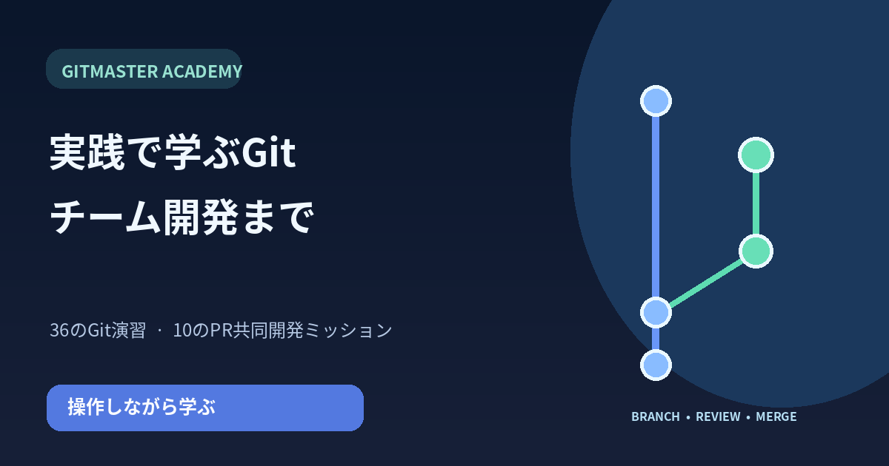

基礎から一歩ずつ
インストール、ファイル編集、diff、add、commit、ブランチ、マージ、復旧を36の演習で学びます。
 KINORA会話がつなぐ毎日、家族に安心をKINORAを見る ↗
KINORA会話がつなぐ毎日、家族に安心をKINORAを見る ↗Gitコマンドを自分で入力して実践。ブランチと履歴を図で理解し、Pull Requestやレビュー、承認とマージまで練習できます。
Git演習36問 · PR協業10ステップ · PDF教材
インストール、ファイル編集、diff、add、commit、ブランチ、マージ、復旧を36の演習で学びます。
Draft・ReadyのPR、レビュー依頼、修正、承認、CI、マージを10のステップで体験します。
端末の解説とリンク付きPDFを通して、コマンドとオプションの意味を確認できます。